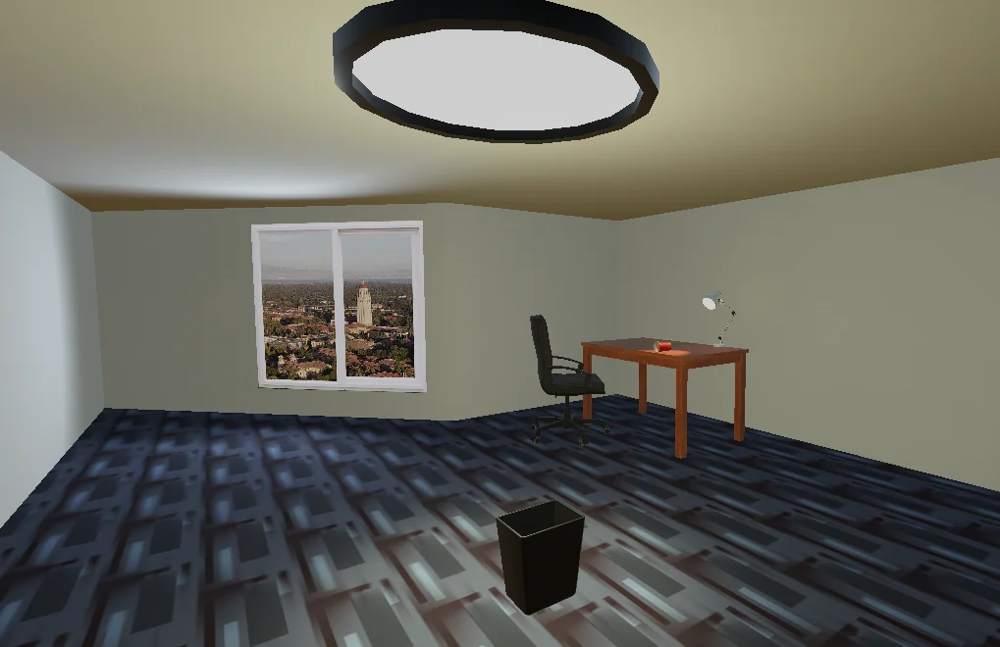

The Party
I rebuilt the room where my a cappella group held its afterparties at Stanford. In VR, you spend a night there, from the first drink to the moment you realize a friend needs help.

Altered perception
When you walk in, our usual playlist is blaring from the TV. Some of the group are on the couches. You can stop and talk, check the fridge, or take a sip from the cup in your right hand. The cup stays there all night. Each drink blurs your vision and distorts what you hear. If you keep going, you can black out.

A friend asks you to walk them to the bathroom. That’s my voice you hear asking. Once you’re there, they collapse on the floor beside you.

You go back for help. The couches and the TV are right where you left them, but now the whole room is red. I wanted that particular feeling of coming back to a party and realizing the night should have ended a while ago.

A glowing pillow takes you to my dorm the next morning. There’s an empty bottle left over from the night before. The last thing you do is pick it up and throw it away.

Building a place from memory
I built both rooms in Unity. For the morning scene, I had my own dorm room to work from, right down to the view through the window. I modeled some props, used existing models for others, and scripted how the guests move and when they’ll talk to you.
The story needed to reach the bathroom whether you drank or stayed sober. What I could leave up to you was how clearly you saw and heard your friend by the time you got there. I wrote shaders for the changes in vision and used spatial audio to change how the room sounded around you.
Creative process
At first I just wanted to see how closely I could recreate a room I knew so well. As classmates tried it over the quarter, I kept coming back to three memories: worrying about a sick friend, staying at a party as the mood turned, and having a quiet moment to myself the next morning. Those became the shape of the piece.
I’d like to come back to the bathroom scene in my research. Does standing next to someone who needs help feel different from watching the same thing happen on a screen? I’m curious whether that feeling stays with you the next time a friend asks you to walk with them.